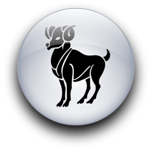

Женщина Весы и Мужчина Овен
-


Обычно женщине-Весам нетрудно убедить Овна открыть ей свое сердце. Он - пластилин в ее милых руках, а ведь Овны, вы знаете, ни в чьих руках не бывают такими. Они сделаны из железа и стали (металлы тоже связаны с Солнечным знаком). Но рядом с женщиной-Весами он растает, как снеговик в июле. Он не может устоять перед ее чарами еще и потому, что она хвалит его удивительные качества, которые, как ему кажется, другие всегда игнорируют. Не может он устоять и перед ее непреодолимой сексуальной привлекательностью, ее женской прелестью, (это вначале, пока нет еще никаких сюрпризов). Кроме того, она, возможно, красива, как большинство женщин-Весов, ее улыбка очаровывает, а каждый Овен-мужчина обожает, когда у него такая подруга или жена, что другие ему завидуют. Ему нужно гордиться женщиной, которую он любит, показывать ее и хвастаться ею. Он хочет, чтобы она всегда была лучше и красивее других женщин, чтобы было понятно: он получил первый приз на празднике любви (вы помните, Овны всосали это стремление к победе с молоком матери). Так как она, возможно, выше множества других женщин, ярче, привлекательней, обладает прекрасной фигурой и так далее, эта женщина будет отвечать всем требованиям Марса, и начало их любви не будет омрачено ничем.
Но позже женщина-Весы, любящая Овна, может часто терять свое равновесие, ибо находится на грани невроза каждый раз, когда ее заставляют мгновенно действовать, а она еще не совсем уверена, чего хочет. Из-за этого в их отношениях будут возникать неустойчивые периоды. Этот мужчина требует, чтобы все было сделано теперь же, немедленно, еще вчера, даже если он только что решил, что ему нужно. "Ты хочешь, чтобы я сделала это сегодня, дорогой, или я могу сделать это завтра?" - будет ли это касаться сдачи в химчистку его любимого свитера или печатания копии адресной книги, чтобы у него был лишний экземпляр, если он ее потеряет. (Он постоянно теряет вещи.) "Сегодня", - скажет он ей. (Если бы ему нужно было это завтра, он и попросил бы ее завтра.)
Такое непоследовательное и нетерпеливое Марсово мышление может привести в смущение ее деликатную душу Венерой. Она может спросить: "Побудет ли более разумным планировать все вперед или пытаться что-то сделать завтра?" - чтобы в ответ услышать, как он закричит: "Не спорь со мной! Только делай, как я говорю, пожалуйста". После того как Овен признает, насколько он эгоистичен, почувствует себя виновным, пристыженным, извинится и пообещает не делать этого впредь, он тут же делает это снова, и снова, и снова. Типичному управляемому Марсом мужчине нетрудно извиниться. Это одна из его наиболее приятных черт. Овен быстро согласится с ошибкой и осознает свою вину, но не бросит плохую привычку. Все же это прекрасное качество - уметь признавать свои ошибки и пытаться исправить их. Он пытается. Не всегда успешно, но, видит Бог, пытается.
Она тоже легко извиняется. Подобно Овнам, Весы, как правило, признают свои ошибки и просят прощения. Фактически она, возможно, слишком готова признать ошибки, то есть решить, что сделанное или решенное ею неправильно. Она беспокоится, если задевает его чувства, сделав или сказав что-то не так, и пытается грациозно искупить свою вину. Это ей придется делать часто, потому что он сверхчувствителен. Он хочет, чтобы Все любили его: семья, друзья, незнакомцы и, конечно же, женщина, которой он обладает (примерно так он и думает о ней - как об особом восхитительном, драгоценном, долгожданном даре, который он нашел поделкой в рождественское утро). Овны-мужчины могут быть исключительно сосредоточены на себе, даже не отдавая себе в этом отчета. Она постепенно это поймет, но прежде ее более тонкие чувства Венеры будут не раз серьезно задеты. Она попытается со всей силой логики и убеждения Весов заставить его понять, что не может любить его каждый человек в мире. Но это ее Овен пропустит мимо ушей.
Он недоумевает, почему им не восхищаются его враги, никогда не осознавая, что он сделал или сказал, что так разозлило их. Могли бы понять, что он был прав и не хотел никому причинить вреда. Он только защищался. Почему они не видят, что он сожалеет о поспешных словах и уже забыл свой гнев? Овен считает, что люди забывают плохое так же быстро, как и он. Его всегда глубоко ранит, когда кто-то дуется или ворчит на то, о чем он давно забыл. Его враги сегодня - завтра его закадычные друзья. Он может прибежать домой, разъяренный, в надежде, что его подруга-Весы разделит его гнев. Если она попытается посмотреть на происшедшее трезво и захочет узнать точку зрения противника, а затем попробует указать мужу или возлюбленному Овну, где он, возможно, мог быть не прав, он накинется на нее, иногда неистово и даже со слезами, и обвинит ее в вероломстве. Она его не любит! Если бы любила, была бы на, его стороне, а не защищала бы его врагов! Его не интересует ее справедливость, типичная для Весов. Единственная правильная точка зрения - его... и, если бы она действительно считалась с ним, она бы это увидела. Пока Овен сердит, он не может ни о чем судить объективно. На следующий день он, вероятно, будет сущим ягненком, признает свою горячность и попытается сгладить свою глупость. Вот теперь она могла бы сказать, что он был не прав, потому что он уже осознал это сам. Но не до того. По природе своей управляемая Венерой женщина больше, чем другие, способна уравновешивать деликатные ситуации, которые своим необузданным характером создает ее возлюбленный-Овен. Она нежна, женственна, логична, умна. Но она рождена под мужским знаками однажды может воспротивиться, когда почувствует, что он совершенно несправедлив. Однако это вряд ли изменит его, он либо уйдет, хлопнув дверью, либо будет сердито хмуриться в углу, убежденный, что она его ненавидит. Женщине-Весам лучше не показывать ему железный кулак в бархатной перчатке. Овен довольно скоро почувствует, что им управляют. Какое-то время, правда, он позволяет это делать, но стоит ему обнаружить, что его пытаются втиснуть в какую-то модель поведения, он либо упирается рогами в стенку, либо гневается, а иногда и то и другое. Никто не должен указывать, что ему делать, он сам себе хозяин! Даже когда он серьезно намерен что-то сделать, скорее откажется от своих планов, если подумает, что ей этого очень хочется. А все потому, что он терпеть не может делать то, что предлагает другой, особенно если пожелание высказано открыто.
То, что женщина-Весы любит спорить, обсуждать любое решение или ситуацию, не остановит типичного мужчину-Овна. Он видит в этом противодействие, вызов. Он бы умер со скуки с женщиной, которая никогда не защищалась бы от него. Его марсовскую натуру возбуждает обещание битвы, независимо от того, говорят ли они, какой фильм смотреть, какую машину купить, или обсуждают глобальные проблемы. Ему надо выиграть во всех этих спорах. Он не уступит ни на йоту, пока не убедится, что не победил (или пока его умная подруга-Весы не разрешит ему поверить в это). Тогда он горд, доволен и счастлив. A ее ожидает любовь, страсть и нежность, о каких только мечтает любая женщина.
Секс в представлении этого мужчины тесно связан с его способностью быть всегда правым и представать победителем перед женщиной, которую он любит. Его должны уважать, любить, соглашаться с ним и восхищаться им, и тогда он должным образом покажет всю мощь Марса как возлюбленный. Если он чувствует себя отвергнутым, он превратится в лед, и это уже серьезней, чем огонь Овнов. Их сексуальная связь, как правило, необычайно прочна и целостна. Ее женственность и его мужественность прекрасно сочетаются до тех пор, пока женщина-Весы не разрешает вмешиваться мужской половине её - Солнечного знака в их интимную жизнь (например, показывать, что ее способности ничуть не хуже, чем его). Он должен лидировать в их близости, как, впрочем, и во всем остальном. Если она позволяет это, он будет самым чувственным, романтичным, сентиментальным, любящим и страстным любовником, которого она только может вообразить. Но он способен превратиться в требовательного тирана, если она разрушит его сверхнеобходимую уверенность в себе.
Хотя их натуры полярно противоположны, характеры мужчины, управляемого Марсом, и женщины, управляемой Венерой, сочетаются самым изысканным образом. К тому же Марс и Венера сами по себе неистово любили друг друга (даже когда она была замужем за Юпитером). Почитайте греческую мифологию. Это поможет лучше понять Солнечные знаки.
Принимая во внимание то, что Овен любит скакать по скалистым склонам, а дитя Венеры живет в ненадежном мире качающихся чаш золотых весов, где легчайшее дыхание ветра может лишить, ее внутренней гармонии и внешнего спокойствия, эти двое с удивительным успехом могут соединить свои столь различные натуры. Женщина-Весы с помощью этого мужчины обретет опьяняющую свободу и активную умственную деятельность, а Овен получит удовольствие, гуляя по прохладным лесам Весов, среди покачивающихся колокольчиков и порхающих бабочек.
Женщина-Весы очень женственна. Лишь немногие мужчины могут совладать с этой, мощной комбинацией мужской решимости и восхитительной утонченности. Но мужчина-Овен всегда принимает любые вызовы и побеждает, а ее вызовы обещают победителю драгоценную награду. Все мужчины в душе мальчишки, но Овен - особенно. Чисто внешне в нем нет ничего детского. Он крепок и силен - тип самца, и только аура невозможных мечтаний и задумчивой тоски вызывает ощущение юности... Если женщина-Весы использует свое очарование Венеры и терпение, чтобы направить его пылающие стремления и потрясающую энергию на одну стоящую цель, он может стать великим борцом за победу добра (оба они обладают сильным чувством милосердия и ненавидят любую несправедливость).
Основной причиной трудностей в их отношениях будет то, что они оба Кардинальные знаки лидерства - и Овен, и Весы. Такое сочетание никогда не будет союзом, если между ними ведется постоянная битва за первенство. Они должны будут научиться идти рядом, на равных, а не как высший и низший. Это единственный способ для них найти путь к сердцам друг друга.